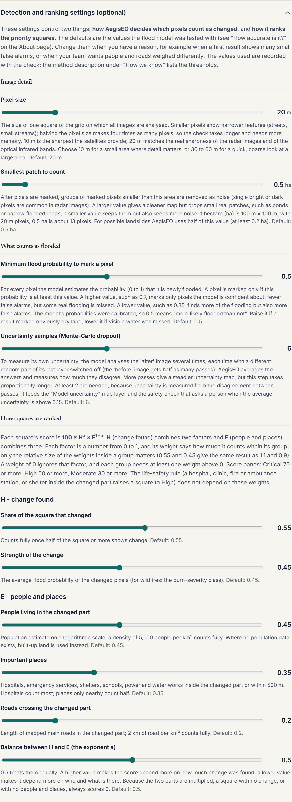

Step 4 of the wizard contains an optional section that was previously titled "Expert settings (optional - most people never need these)". It is now called Detection and ranking settings, because that is what it controls: how AegisEO decides which pixels count as changed, and how it ranks the priority squares. Every setting now carries a visible explanation and its default value.
The defaults are the values with which the flood model was evaluated, and they suit most checks. But a result can call for an adjustment: a first run may show many small specks of false alarm, a team may want finer detail over a small town, or an organisation may weigh roads more heavily than population. The settings make such adjustments possible without editing code, and they are sent to the server as part of the request. Only settings that the chosen method actually uses are shown and sent: the flood threshold and uncertainty samples appear only for floods; the burn threshold only for wildfires. If nothing is changed, nothing is sent and the server uses its defaults. Practice runs have fixed settings.

| Setting | Range / default | What it controls and the effect of changing it |
|---|---|---|
Pixel sizeresolution_m | 10-60 m in the interface (API 10-100) default 20 m (setting AEGIS_DEFAULT_RESOLUTION_M) | The size of one square of the common grid on which all images are analysed (geo/grid.py). Smaller pixels show narrower features; halving the size quadruples the number of pixels, so the check takes longer and needs more memory. 10 m is the finest the satellites provide (and the resolution the flood model was trained on); 20 m matches the real sharpness of the radar and of the optical infrared bands. If the area would exceed 2.6 million pixels, the server coarsens the size automatically; the interface now warns when that will happen. When to change: 10 m for a small area where detail matters (a town, a narrow valley); 30-60 m for a quick, coarse first look. |
Smallest patch to countmin_mapping_unit_ha | 0.1-5 ha (API 0.05-20) default 0.5 ha | After pixels are marked, connected groups smaller than this area are removed as noise, a minimum mapping unit. 1 hectare is 100 m × 100 m; at 20 m pixels, 0.5 ha is 13 pixels. Larger values give a cleaner map but drop small real patches (ponds, narrow flooded roads); smaller values keep them and also more radar speckle. Landslides use half the value (at least 0.2 ha). When to change: raise it if a result is covered in specks; lower it when small features matter and the pixel size allows. |
| Setting | Range / default | What it controls and the effect of changing it |
|---|---|---|
Minimum flood probability to mark a pixelprob_thresholdfloods only | 0.3-0.8 (API 0.2-0.9) default 0.5 | A pixel is marked as newly flooded only if P(new water) is at least this value. Higher values (0.7) keep only confident pixels: fewer false alarms, more missed flooding (higher precision, lower recall). Lower values (0.35) do the opposite. Because the probabilities are calibrated, 0.5 means "more likely flooded than not". When to change: raise it if obviously dry land was marked; lower it if visible water was missed. |
Uncertainty samples (Monte-Carlo dropout)mc_samplesfloods only | 2-12 (API 1-16) default 6 | How many times the model analyses the 'after' image with a different random part of its last layer switched off (the 'before' image gets half as many). The answers are averaged into the probability, and their spread is the uncertainty. More samples give a steadier uncertainty map and take proportionally longer in the detection step (which is a small part of a check). Minimum raised from 1 to 2 in this round: with a single pass the measured uncertainty is exactly zero everywhere, so the "Model uncertainty" layer becomes blank and safety check G13 can never ask a person because of uncertainty. When to change: rarely; increase for a steadier uncertainty map. |
Minimum burn index (dNBR) to mark a pixeldnbr_thresholdwildfires only | 0.05-0.5 default 0.10 | A pixel that had vegetation before is marked burned when dNBR reaches this value. 0.10 is the start of "low" severity on the USGS scale; raising it (for example to 0.27, the start of "moderate-low") keeps only clearer burns and avoids false alarms from harvested fields or drying grass. When to change: raise it in farmland or dry-season scenes with many small false burns. |
These weights enter the score formula of Section 5.5. Within each group (H or E) a factor's weight is divided by the group's total, so only the relative sizes inside a group matter: 0.55 and 0.45 give the same result as 1.1 and 0.9. A weight of 0 ignores that factor.
| Weight (API field) | Default | Factor it weighs (how the factor is computed in prioritize.py) |
|---|---|---|
Share of the square that changed (extent) | 0.55 | Changed share of the square, divided by 0.5 and capped at 1, so half a square or more counts fully. |
Strength of the change (intensity) | 0.45 | Average probability of the changed pixels (wildfire: severity class ÷ 4). |
People living in the changed part (population) | 0.45 | log(1 + people) ÷ log(1 + 5,000 × square area), capped at 1. Without population data: built-up share of the changed part relative to 25% of the square. |
Important places (critical_facilities) | 0.35 | 1 − e−w, where w adds a weight per place (hospital 1.0; fire or ambulance station 0.8; shelter 0.7; clinic, police, power and water works 0.6; school 0.5), halved for places only within 500 m. |
Roads crossing the changed part (access) | 0.20 | Kilometres of main road in the changed part ÷ (2 km per km² × square area), capped at 1. |
Balance between H and E (hazard_exponent, a) | 0.5 (UI 0.2-0.8) | The exponent a in 100 × Ha × E1−a. Higher a makes the score depend more on how much changed; lower a, more on who and what is there. |
When to change the weights: when an organisation's priorities differ, for example increasing access for a team planning road clearance, or critical_facilities for health-service planning. The sensitivity analysis on each square then shows how much the ranking depends on such choices.
backend/aegis/api/schemas.py, tested in test_api.py).Two flood parameters are accepted by the API but not shown in the interface: max_hand_m (default 15 m: water further above the local drainage is removed) and max_slope_deg (default 8°: water on steeper slopes is removed). Specialists can send them in the detection object of POST /api/analyses. The defaults remove radar shadow on hillsides; raising them would keep more water in hilly terrain at the cost of more false alarms.
frontend/src/pages/check/draft.ts, saved in the browser tab so a reload does not lose them).resolution_m, weights and a detection object with the parameters relevant to the disaster type (CheckWizard.tsx).params (analyses table).RunConfig (jobs.py), and the detection and ranking functions use them.